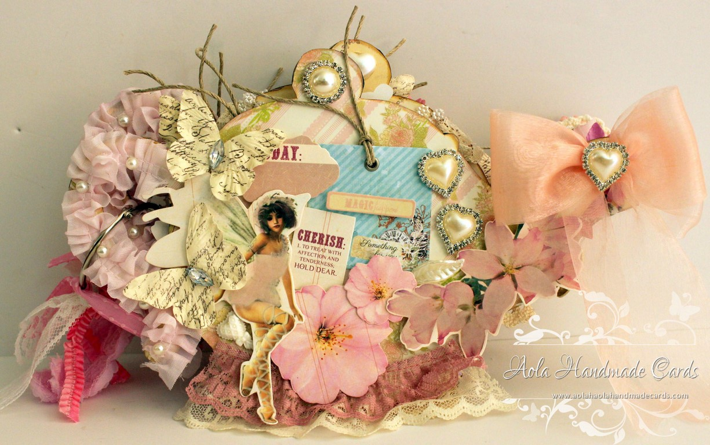
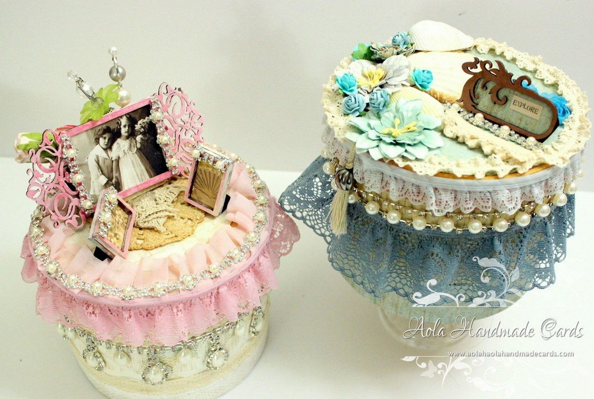

Customized from Hands to heart
We offer the best customized products delicately crafted to suit your needs. Any Occasion we convert into a lifetime memory to treasure.
Click here for some examples.
Aola Handmade cards is a celebration of our contemporary lives , a living
culture and not part of a mass imposed, one size fits all, consumer
culture where everything looks the same and is easily boxed up. Each handmade
item is about people and not machines. It is about the time and effort that goes into each piece of work, it is about
the skill of each maker, the technical ingenuity of the maker, the magic of an individual’s
imagination, and it is a treasure on a beach of throwaway machine made tat!

Unique and Personalized
Our products are 100% handmade and all of them are one of a kind. Unique and Beautiful.All kinds of personalization comes free of cost. They will make one of a kind gift.Personal Creations is your one-stop shop for unique and personalized gifts, from simple to stunning, silly to sentimental. At Personal Creations we have a gift for every occasion to satisfy everyone’s taste and style, from incredible engraved gifts to handsome monogrammed gifts for him and her. Many of our most popular gifts are often less than $20. Let us expertly customize a stunning gift for your loved one’s next birthday, graduation, wedding or anniversary.

Free Youtube Tutorial
We believe in spreading knowledge. Many of our projects comes with a video tutorial which will teach you how we did that. You can experience the amount of effort and detailing we throw in one project. We also love to encourage others for trying out such crafts. The collection of our decoupage ideas is amazing! It’s all the Mod Podge tutorials you could ever want! Over 50 Shabby chic crafts for your viewing pleasure. I also want to share with a few instructions tools that might help you once you decide which project you are going to do. Check out my 7 steps to perfect layering and my learn how to create Resins with my guide (with frequently asked questions). If you use all the resources together I promi se you’ll have success. I also would love for you to sign up for my weekly newsletter for even more projects and updates (plus you get a free e-book!). Have fun crafting